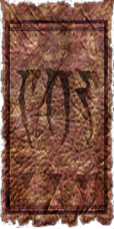
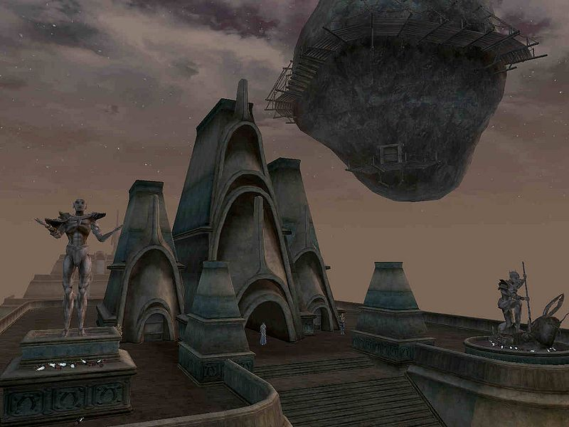
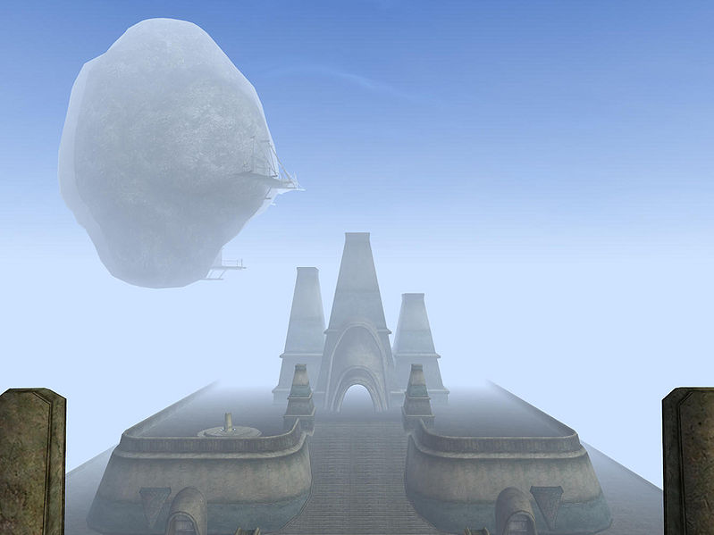
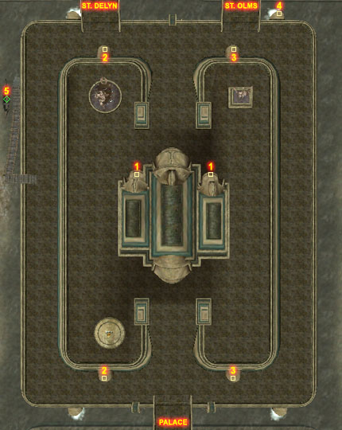
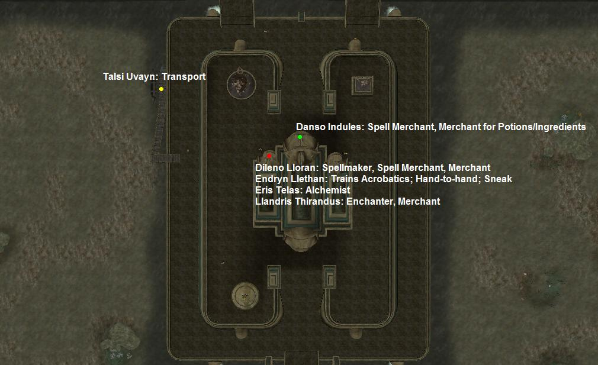
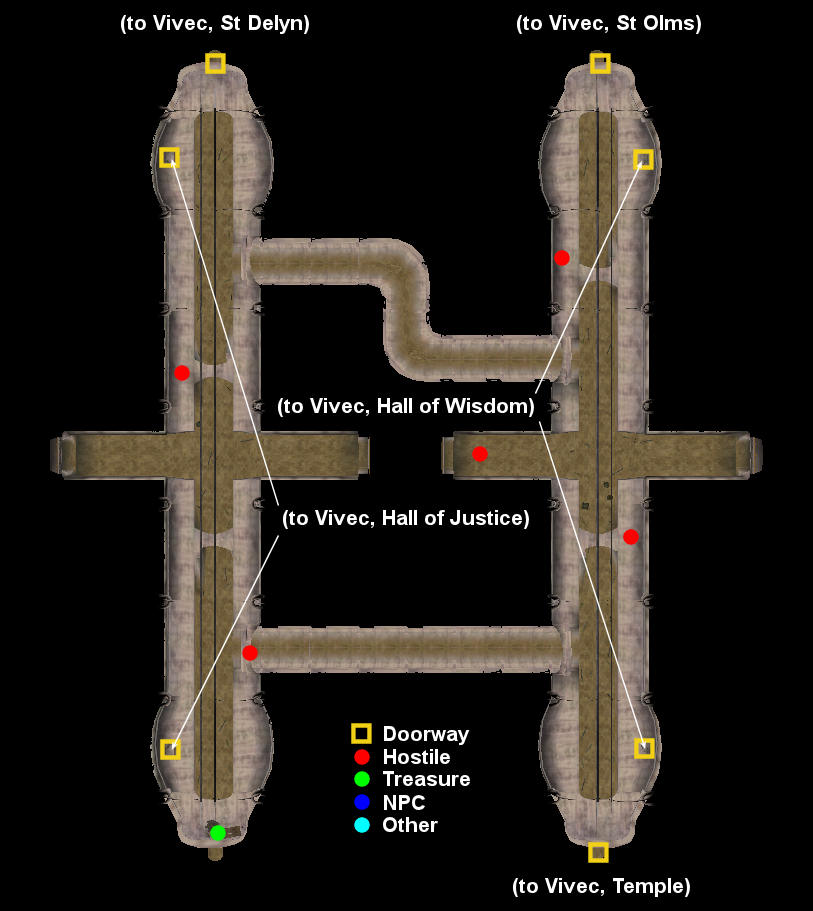

|  |
|
 Vivec Temple |
|
 The Ministry Of Truth |
|
 Map of Vivec's Temple canton |
The Temple Canton is considered the holiest place in all of Vvardenfell by the Dunmer. It is the headquarters of the Tribunal Temple and home of the living god Vivec, and is visited by hundreds of tourists and pilgrims daily. The High Fane is the largest Tribunal Temple on Vvardenfell and is presided over by the Archcanon, along with a large staff of priests, healers, and monks. The Hall of Wisdom and Hall of Justice contain the executive, administrative, judicial and martial operations of the Tribunal Temple, while the Ministry of Truth, a moon suspended by Vivec's power above the Canton, provides a prison and re-education center operated by the Temple Ordinators for the correction of heretics.
Mehra Milo is a Dissident Priest working in the Library of Vivec under cover and your first contact with the group. You'll find many common books here along with a Land Deed.
In the Office of the Watch you'll find two ranking Ordinators, Tarer Braryn and Elam Andas, who have some jobs for you. A hidden trap door leads to the Secret Library of Vivec, which contains many interesting books, among them Progress of Truth, Galur Rithari's Papers, and Vampires of Vvardenfell, v II.
The Hall of Wisdom is where many Temple staff have their sleeping quarters and their offices.
At the base of the canton lies a typical underworks, inhabited by rats and slaughterfish. It can be accessed through the Halls of Justice or Wisdom, or through underwater grates to the northwest, northeast and southeast of the canton.
Tholer Saryoni is the Patriarch and Archcanon of the Tribunal Temple, located in his offices behind a locked door. Endryn Llethan is a Quest giver for the Temple as well. There are a great number of shrines giving blessings to the faithful.
The Ministry of Truth is a hollow moon floating above the Temple Canton, which functions as a prison and re-education center for Temple dissidents. When you visit it during the Main Quest, Alvela Saram will provide you with a key to get in.
Two bridges north connect to the St. Delyn and St. Olms Cantons. A bridge south leads to the Palace of Vivec. The Gondola on the west side provides transportation to the Arena, Hlaalu and Telvanni Cantons.
|  Services in the High Fane and around the Temple |
|  Map of Vivec, Hall Underworks |